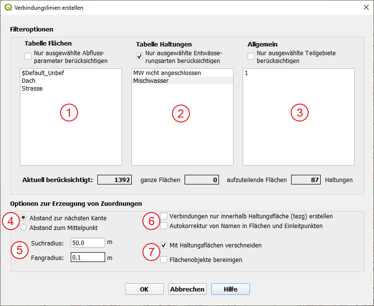
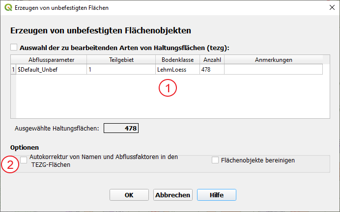
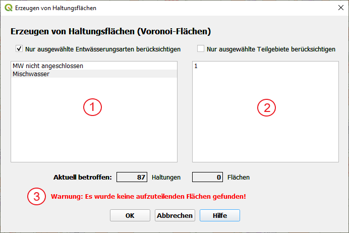
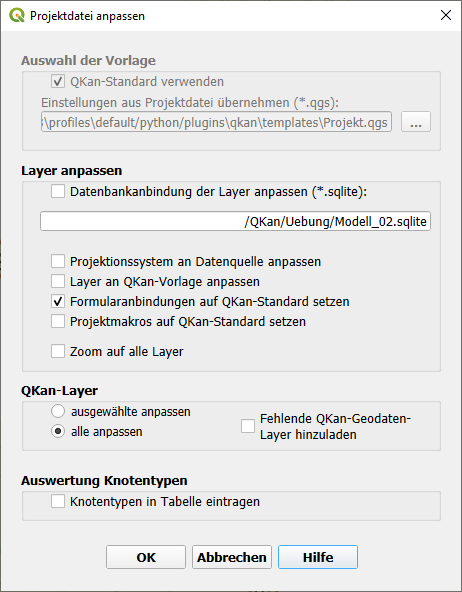
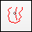
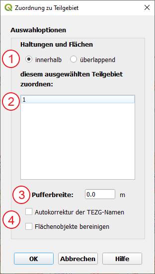

Übersicht
Berechnung von Oberflächenabflussparametern
Für befestigte und unbefestigte Flächen werden die Oberflächenabflussparameter nach HYSTEM-EXTRAN (geplante Alternative: Kanal++) berechnet.
Tabellen zur Auswahl der zu berücksichtigenden Flächen
Mit Hilfe der Auswahltabelle kann die Bearbeitung auf Haltungen mit ausgewählten Entwässerungsarten sowie allgemein auf ausgewählte Teilgebiete beschränkt werden.
Automatisches Erzeugen von Anbindungen von Einzeleinleitern
Für jeden Einzeleinleiter, für den noch keine Anbindung erstellt wurde (automatisch oder manuell), wird eine Linie erzeugt, die am Punkte des Einzeleinleiters beginnt und auf der damit verknüpften Haltung endet.
Tabelle zur Auswahl der zu berücksichtigenden Flächen, Haltungen und Haltungsflächen
Mit Hilfe der Auswahltabelle kann die Bearbeitung auf Haltungen mit ausgewählten Entwässerungsarten sowie allgemein auf ausgewählte Teilgebiete beschränkt werden.
Ausführliche Erläuterung zu diesem Thema: Anbindungen von Einzeleinleitern
Verbindungslinien von Flächen zu Haltungen erstellen
Für jede Fläche, für die noch keine Anbindung erstellt wurde (automatisch oder manuell), wird eine Linie erzeugt, die innerhalb der Fläche beginnt und auf der damit verknüpften Haltung endet.
Abhängig von dem Flächenattribut „aufteilen“ ist eine Anbindung pro Fläche oder pro Flächenteilstück und Haltungsfläche (Tabelle „tezg“) vorgesehen.
Sind Teilgebiete erstellt worden und es soll in diesen gearbeitet werden, kann dies über die Auswahl in diesem Kasten geschehen.
Die Zuordnung sollte anschließend immer visuell überprüft werden.
Tabelle zur Auswahl der zu berücksichtigenden Flächen, Haltungen und Haltungsflächen
Mit Hilfe der Auswahltabelle kann die Bearbeitung auf Flächen mit ausgewählten Abflussparametern, Haltungen mit ausgewählten Entwässerungsarten sowie allgemein auf ausgewählte Teilgebiete beschränkt werden.
Ausführliche Erläuterung zu diesem Thema: Grundprinzip
Erzeugen von unbefestigten Flächen
Die Funktion  Erzeuge unbefestigte Flächen legt für jede Haltungsfläche (Tabelle tezg) aus dem Zwischenraum
der befestigten Flächen ein Flächenobjekt angelegt. Dieses kann aus mehreren Flächenteilen bestehen.
Erzeuge unbefestigte Flächen legt für jede Haltungsfläche (Tabelle tezg) aus dem Zwischenraum
der befestigten Flächen ein Flächenobjekt angelegt. Dieses kann aus mehreren Flächenteilen bestehen.
Die Attributdaten werden dabei aus den Haltungsflächen übernommen.
Mit Hilfe der Auswahltabelle kann die Bearbeitung auf ausgewählte Haltungsflächen beschränkt werden. Aufgelistet sind alle Abflussparameter und Teilgebiete, die in den Haltungsflächen verwendet werden. Durch die Auswahl einer Zeile in der Tabelle werden alle Haltungsflächen mit der dargestellten Kombination aus Abflussparameter und Teilgebiet für die Bearbeitung ausgewählt.
Ausführliche Erläuterung zu diesem Thema: Erzeugen von unbefestigten Flächen
Die Nutzung dieses Formulars in einem Anwendungsfall ist hier zu sehen.
Erzeugung von Haltungsflächen
Mit dieser Funktion können (große) Haltungsflächen aufgeteilt werden, sodass jede Fläche eindeutig einer Haltung zugeordnet werden kann.
Soll nur ein Teilgebiet bearbeitet werden, dann kann dies hier, über die Aktivierung der Option „Nur ausgewählte Teilgebiete berücksichtigen“ mit anschließender Auswahl des entsprechenden Teilgebiets, geschehen.
Sind keine aufzuteilenden Flächen im Vorfeld markiert worden, erscheint diese Warnmeldung. Die Funktion kann so nicht ausgeführt werden.
Export nach HYSTEM-EXTRAN
Der Export funktioniert für Version 7.8 und 7.9. Die in diesem Formular geforderte HYSTEM-EXTRAN Vorlage-Datenbank benötigt eine Regenreihe mit einem dazugehörigen Regenschreiber (muss gleichen Namen wie in den QKan-Flächendaten haben).
Die Nutzung dieses Formulars in einem Anwendungsfall ist hier zu sehen.
Tabelle zur Auswahl der zu exportierenden Daten
Mit Hilfe der Auswahltabelle kann der Export auf ausgewählte Teilgebiete beschränkt werden.
Import aus HYSTEM-EXTRAN
Der Import aus HYSTEM-EXTRAN geschieht mit Hilfe einer HE Quelldatenbank (Endung .idbf).
Tabelle zur Auswahl der zu importierenden Daten
Mit Hilfe der Auswahltabelle kann der Import auf bestimmte Datentabellen des Kanalnetzes, bestimmte Flächen oder Referenztabellen beschränkt werden.
Ausführliche Erläuterung zu diesem Thema: Import aus HYSTEM-EXTRAN
Projektlayer aktualisieren
Mit diesem Formular können Projekte, die noch auf einer älteren QKan-Version basieren, auf den aktuellsten Stand gebracht werden. Neben Änderungen an der Datenbankstruktur sind dabei meistens auch Anpassungen an den Projektlayern notwendig. Dazu sollte in dem Formular unter der Überschrift „QKan-Datenbank“ die Option „auf aktuelle Version anpassen“ (4) gewählt werden. Es wird automatisch sichergestellt, dass die Wertbeziehungen (Überschrift „Layer anpassen“) aktualisiert werden. Weiterhin ist es empfehlenswert, unter der gleichen Überschrift auch die Option „Formularanbindungen auf QKan-Standard setzen“ aktiviert ist.
„QKan-Standard verwenden“ sollte aktiviert werden, wenn keine eigenen Standards vorliegen. Sollen Einstellungen aus bereits existierenden Projektdateien übernommen werden, so kann die entsprechende Datei unter „Einstellungen aus Projektdatei übernehmen“ mit der Schaltfläche […] rechts daneben ausgewählt werden.
In diesem Bereich kann eine Datenbank ausgewählt werden, an die das Projekt angebunden werden soll. Auch die übrigen Optionen sollten in der Regel aktiviert werden.
Unter dieser Überschrift kann ausgewählt werden, welche Layer bearbeitet werden sollen. Allgemein ist „alle anpassen“ empfehlenswert.
Ist die vorliegende Datenbank nicht auf dem aktuellen Stand (oder es besteht Unsicherheit darüber), kann hier die Option „auf aktuelle Version anpassen“ aktiviert werden.
Mit der Schaltfläche […] wird der Namen und Standort des angepassten Projekts festgelegt.
Datenbank aktualisieren
Diese Funktion wird beim Aufruf vieler Plugins immer dann automatisch aufgerufen, wenn QKan feststellt, dass die geladene QKan-Datenbank nicht mehr auf dem aktuellen Stand ist. Dabei wird das aktuell geladene Projekt geschlossen. Falls Ihre Projektdatei nach dem Laden geändert wurde, können Sie mit den Optionsfeldern auswählen, ob die Projektdatei vor der Aktualisierung noch gespeichert werden soll.
Projektdatei auf andere Datenbank übertragen
Oft entstehen nach einiger Zeit komplexe Projektdateien, die besondere Layerdarstellungen enthalten und quasi „Firmenstandards“ darstellen. Solch eine Projektdatei kann mit dem Formular folgendermaßen auf ein anderes Projekt übertragen werden:

Wählen Sie die einzubindende QKan-Datenbank.
Wählen Sie die Projektdatei, die Sie mit dieser Datenbank verknüpfen möchten. Sie können stattdessen auch die QKan-Standardvorlage verwenden.
Wählen Sie den Pfad der neu zu erstellenden Projektdatei aus.
Zuordnung zu Teilgebiet
Mit der Funktion  Zuordnung zu Teilgebiet ist die automatische Zuordnung von Kanalnetz-Elementen zu einem Teilgebiet möglich. Dabei wird das Teilgebiet automatisch in die jeweilige Spalte der Datentabellen eingetragen.
{kind=link}
Die Option „überlappend“ sollte gewählt werden, wenn sichergestellt werden soll, dass auch Flächen, die nur zum Teil im Teilgebiet liegen (z.B von großen Gebäuden), bei der Bearbeitung des Gebietes berücksichtigt werden.
Hier kann des entsprechende zuvor erstellte (Teilgebiet) ausgewählt werden.
Die Nutzung dieses Formulars in einem Anwendungsfall ist hier zu sehen.
Allgemeine Funktionselemente in Formularen
Auswahl in Listen
Für die Auswahl von Zeilen in der Tabelle stehen folgende Funktionen zur Verfügung:
Auswahl einer Zeile: Mausklick links
Auswahl einer weiteren Zeile: [Strg] + Mausklick links
Auswahl einer Zeile rückgängig machen: [Strg] + Mausklick links
Erweiterung der Auswahl von der zuvor ausgewählten Zeile bis zur gewünschten Zeile: [Shift] + Mausklick links
Ob eine Auswahl aktiv ist, kann mit Hilfe des Auswahlkästchen über der Tabelle gesteuert werden. Sobald eine Zeile in der Auswahltabelle angeklickt wird, wird die Auswahl automatisch aktiviert